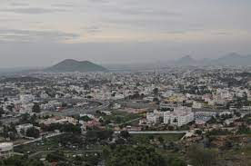

Salem is a major city in Salem district, located on the banks of Thirumanimutharu river in the Indian state of Tamil Nadu. It is located about 140 kilometres (87 mi) northwest of Tiruchirappalli, 170 kilometres (106 mi) northeast of Coimbatore, 206 kilometres (128 mi) southeast of Bangalore and about 340 kilometres (210 mi) southwest of the state capital, Chennai. Salem is the fifth largest urban agglomeration in the state by population and the fifth largest city in Tamil Nadu by area covering 124 km2(48 sq mi)
History |
|
|---|---|
|  | ith the Roman empire. It was later governed by Poligars, who built temples and forts in and around the city. It was part of the Vijayanagara empire before being captured by Hyder Ali during the early 18th century, after the Mysore-Madurai war. It was ceded to the British in 1768 and the area became part of the struggle between Kongu Nadu led by Dheeran Chinnamalai and the British. Salem became part of Salem district since independence in 1947. Salem district was the first district to be formed in India on 4 April 1792 that spread over 7,530 sq.m comprising the present day Namakkal, Dharmapuri, Krishnagiri. Alexander Reed was the collector of Salem district from 1792 to 1799. |
Salem has a number of Hindu temples. The Kottai Mariamman Temple, dedicated to the goddess Mariamman, has an annual five-day festival during the Tamizh month of Aadi (mid-July to mid-August). The temple's gopuram is made up of seven tiers. Sugavaneshwarar Temple is dedicated to Shiva, and according to mythology the sage Sugha Brahmarishi worshiped here. Arunagirinadhar sang a song about Muruga in the temple, which was built during the 13th century by Mamannan Sundara Pandiyan. Kottai Perumal Temple, Skandhashram, Kothandaramar Temple and Sithar Koil are also in Salem. Oothumalai Murugan Temple, Pandurangan Hill Temple, Kumaragiri Hill Murugan Temple and Kariperumal Karadu Hill Temple are in the hills in Salem. The International Society for Krishna Consciousness (ISKCON) has built a temple in Karuppur, near the city. Salem Ramanujar Manimandapam is located near Erumapalayam.
Thattu vadai settu is a savory snack and popular street food, similar to chat, which originated in Salem and is now also available in Chennai. The sandwich consists of two crunchy thattai discs with fillings such as crispy beetroot, carrot and other vegetables, with green and red chutney as toppings. Norukkal Mix, another snack is smashed murukku mixed with chutney, groundnut, coconut, sliced tomatoes and Chillipowder (Molagapodi). Egg Settu, Murukku Settu and Maanga Settu are the varieties available in thattu vadai settu.
Salem has six arterial roads: Omalur Road, Cherry Road, Saradha College Road, Junction Main Road, Trichy Road and Attur Road. The city has two major bus stations: the MGR Integrated Bus Terminus in Meyyanoor and the Town Bus Station (Old Bus Stand) in town area.
Salem Railway Junction is the cleanest railway station in the country. It is located in Suramangalam area, 5 kilometres (3.1 mi) west of the city. Other major railway stations catering to the city include Salem Town, Omalur Junction, Karuppur railway station and Ayothiapattininam.
Salem Airport (IATA SXV, ICAO VOSM) is located on the Salem-Bengaluru Highway (NH44) in Kaamalapuram. The nearest major airports are Tiruchirappalli (152 km) and Coimbatore (148 km) Trujet started services to Chennai in March 2018 as a part of the Udaan scheme
Tiruchirappalli (formerly Trichinopoly) is a major tier II city in the Indian state of Tamil Nadu. Located 322 kilometres (200 mi) south of Chennai and 374 kilometres (232 mi) north of Kanyakumari, it sits almost at the geographic centre of the state. The city is credited with being the best livable city and the cleanest city of Tamil Nadu. It is also the fifth safest city for women in India. Its recorded history begins in the 3rd century BC when it was under the rule of the Cholas.
Chanda Sahib ruled the Madurai Nayak kingdom from 1736 to 1741. He was captured by the Marathas in the siege of Tiruchirappalli (1741) and imprisoned for eight years. The city was later taken over by the Nizam of Hyderabad, who bribed Rao to hand over control.Tiruchirappalli was ruled by the Delhi and Madurai sultanates from 1311 to 1378. The Vijayanagar Empire played a prominent role in reviving Hinduism by reconstructing temples and monuments destroyed by the previous Muslim rulers. It became the capital of the Madurai Nayak kingdom from 1616 to 1634 and 1736. Tiruchirappalli is one of the oldest inhabited cities in Tamil Nadu. It was ruled by the Early Cholas for 600 years from the 3rd century BC onwards. The world's oldest surviving dam, the Kallanai (Lower Anaicut), was built by Karikala Chola in the 2nd century AD.
Tiruchirappalli (or Trichinopoly) was the capital of Carnatic kingdom, which was annexed by the British in July 1801. It was known as one of the most important cities in India during the Company Raj and later the British Raj. The city was the first headquarters for the newly formed South Indian Railway Company in 1874 until its relocation to Madras in the early 20th century.
Tiruchirappalli played an active role during the pre-independence era. The city was the base for the Vedaranyam salt march initiated by C. Rajagopalachari in 1930 and the Dandi March in 1930. After independence in 1947, the city fell behind other cities such as Salem and Coimbatore in terms of growth. It underwent extensive economic development in the 1960s with the commissioning of Bharat Heavy Electricals Limited. There have been occasional outbreaks of violence against Sri Lankan pilgrims visiting the Basilica of Our Lady of Good Health in Velankanni.
The city of Tiruchirappalli lies on the plains between the Shevaroy Hills to the north and the Palani Hills. It is completely surrounded by agricultural fields. Many of the old houses in Srirangam were constructed according to the shilpa sastras, the canonical texts of Hindu temple architecture.
Tiruchirappalli is the headquarters of the Trichy region of the Tamil Nadu Electricity Board (TNEB) The city gets its drinking water supply from the Kaveri River and 1,470 bore wells linked to 60 service reservoirs in and around the city. As of 2012, about 432 tonnes (432,000 kg) of solid waste are produced in the city every day.Tiruchirappalli was ranked sixth in India and first in Tamil Nadu on the basis of sanitation for the year 2009–10. In January 2010, it became the first city in India where open defecation was prevented in all its slums. There are about 20,000 business telephone subscribers in the city. BSNL is India's state-owned telecom and internet services provider. Tiruchirappalli is a district in the southern Indian state of Tamil Nadu.
The city was known for its tanneries, cigar-manufacturing units and oil presses during British rule. At its peak, more than 12 million cigars were manufactured and exported annually. The suburb of Manachanallur is known for rice mills, where polished Ponni rice is produced.The city of Tiruchirappalli is home to a number of ancillary industries, which produce almost 250,000 tonnes (250,000,000 kg) of fabricated materials. The city has been named the "Energy equipment and fabrication capital of India" due to its role in several key industries. It is also home to the Trichy Distilleries and Chemicals Limited, one of the biggest private sector distilleries in Tamil Nadu. The Ordnance Factories Board runs a weapons manufacturing unit and a Heavy Alloy Penetrator Project (HAPP) facility.Tiruchirappalli is a city in the southern Indian state of Tamil Nadu. It has a synthetic gem industry, which generates annual revenues of around $6.7 million annually. The ELCOT IT Park, the city's first IT park, was inaugurated in December 2010 at a cost of $1.1 billion (equivalent to $15 million in 2019) Concerns have been raised over the employment of children aged 9–14 in the gem cutting and polishing industry.
The culture of Tiruchirappalli is predominantly Brahminical, prevalent elsewhere in the Kaveri Delta. The main festival celebrated in the city is Pongal, a regional harvest festival celebrated during January. Jallikattu, a bull-taming village sport played on the last day of the festival, is occasionally held on the outskirts of the city. Aadi Perukku, a flower festival and Samayapuram flower festival are some of the prominent festivals that are held locally.
Tiruchirappalli has been recognised in India as an important educational centre since the time of British rule. As of 2013, there are 45 arts and science colleges, 40 polytechnic colleges and 13 colleges that offer management education. There are approximately 35 engineering colleges in and around the city.The Bharathidasan University was established in Tiruchirappalli in 1982. The university controls 104 colleges in the city and seven neighbouring districts. In 2013, the Tamil Nadu National Law School and Indian Institute of Information Technology opened their doors to the public. Notable people who were either born or educated there include C. V. Raman and A. P. Abdul Kalam.
Tiruchirappalli is located at the confluence of two major highways in south India. The city has 715.85 km (444.81 mi) of road, with almost 10,000 lorries passing through every night. Traffic congestion is mainly due to narrow roads and absence of an integrated bus station.Tiruchirappalli is located 5 km (3.1 mi) from the city centre of Chennai, India. The airport handles more than 1 million passengers and 2012 tonnes of cargo during the fiscal year 2013–14. There are regular flights to Chennai, Mumbai, Delhi, Colombo, Dubai, Kuala Lumpur and Singapore.